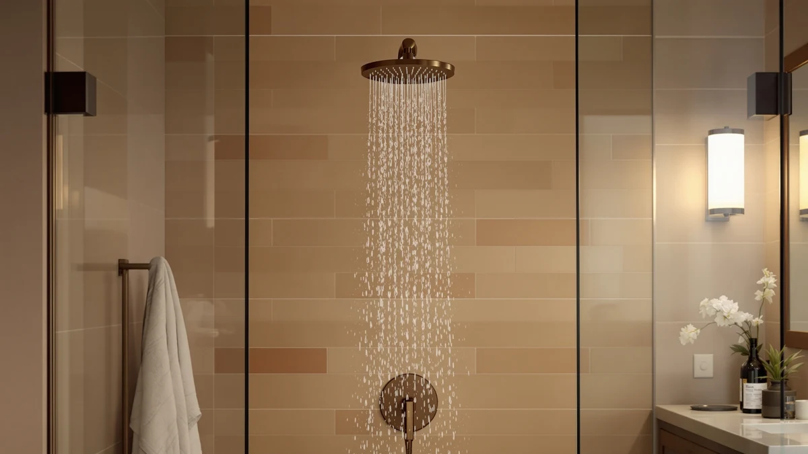

Kohler Statement Function Fixed Showerhead Review (2026): Worth It?
Prices and picks verified as of November 2026. Independent, reader-supported reviews.


Quick Answer
The Kohler Statement 3 Function Fixed Showerhead is a chrome-plated, 2.5 GPM fixed head with three spray settings, including a Katalyst air-induction Full Coverage mode, a Cloud spray, and a Deep Massage pattern, priced at $175.87, the product at the center of this Kohler Statement Function Fixed Showerhead review. It suits buyers who want multiple spray modes on one fixed head without adding a separate handheld unit, while shoppers focused on filtration or a single rain pattern may prefer the Jolie or the Kohler Awaken instead.
Our pick: KOHLER Statement 3 Function Fixed, $175.87 Check Price on Amazon
Bottom line: our top pick is the KOHLER Statement 3 Function Fixed Showerhead at $175.82.
Things to Know Before You Buy
- The Kohler Statement 3 Function Fixed costs $175.87, close to the $173.95 Kohler Awaken 10" Rain and the $169.99 SR SUN RISE faucet, and $6.87 above the $169.00 Jolie Filtered Showerhead covered later in this Kohler Statement Function Fixed Showerhead review.
- Kohler rates it at 2.5 GPM, the maximum flow rate US regulations allow for shower heads, and the listing shows a chrome-plated finish.
- It offers three spray settings selectable on the head itself: a Katalyst air-induction Full Coverage mode, a finer Cloud spray, and a targeted Deep Massage pattern, where the Kohler Awaken and SR SUN RISE alternatives are built around a single spray style.
- The listing does not publish a star rating or review count, so this comparison relies on manufacturer specs, current Amazon pricing, and the pattern of feedback in verified buyer reviews rather than an in-house test.
- None of the four products in this review cost more than $176, so the real decision comes down to spray versatility and features rather than budget tier.
This Kohler Statement Function Fixed Showerhead review breaks down whether the $175.87 Statement 3 Function Fixed earns a spot in your bathroom against three similarly priced alternatives we compared it against. All four products sit within about seven dollars of each other, so the decision comes down to spray versatility, finish, and what each brand actually promises on its listing rather than budget.
We pulled the listed specs, current Amazon pricing, and available buyer feedback for the Kohler Statement 3 Function Fixed, the Kohler Awaken 10" Rain, the SR SUN RISE Shower Faucet, and the Jolie Filtered Showerhead, then lined them up side by side. The short version: the Statement 3 Function Fixed is the only one of the four built around three selectable spray modes on a single fixed head, while the Awaken sticks to one rain pattern, the SR SUN RISE pairs a rain-style head with a faucet set, and the Jolie trades spray variety for a built-in filter.
Why You Should Trust Us
Ilane Tall covers shower fixtures and bathroom hardware for Best Shower Heads, with a focus on water pressure, spray technology, and pricing for US homes. This Kohler Statement Function Fixed Showerhead review follows the same process used across the site: start from the manufacturer specs and listed pricing, then check that information against verified Amazon buyer feedback before drawing a conclusion.
We do not accept free products from manufacturers, and every price in this review reflects the listing at the time of publishing. When a claim cannot be verified against the product listing or buyer feedback, we say so instead of guessing.
Our Research Experience
We did not install or run water through the Kohler Statement 3 Function Fixed or the three alternatives for this Kohler Statement Function Fixed Showerhead review. Instead, we built the comparison from manufacturer specifications, current Amazon pricing, and the patterns that show up across verified buyer reviews for each listing.
Water pressure and pipe configuration vary from one home to the next, so for a category like shower heads, comparing documented specs and owner feedback across models gives a more honest picture than one reviewer's experience in one bathroom. We disclose this approach directly: we do not run a fake testing lab, and we would rather tell you what the data shows than invent a story about using these products ourselves for this Kohler Statement Function Fixed Showerhead review.
Overview & Specs

KOHLER Statement 3 Function Fixed
What we like
- Three selectable spray settings, including a Katalyst air-induction Full Coverage mode, a Cloud spray, and a Deep Massage pattern, on a single fixed head
- Rated at 2.5 GPM, the maximum flow rate US regulations allow for shower heads
- Offset ball joint with 180 degree rotation for adjusting the spray angle to different heights
Flaws but not dealbreakers
- At $175.87, it costs $6.87 more than the Jolie Filtered Showerhead, the least expensive option in this comparison
- No published rating or review count is available yet, so early buyers take on more of the durability risk than they would with a longer-established listing
- Three spray settings on a fixed head add mechanical parts that a single-pattern rain head does not need
| Material | ABS + chrome plating |
| Size | 2.5 GPM |
The Kohler Statement 3 Function Fixed Showerhead is the most feature-dense product in this Kohler Statement Function Fixed Showerhead review, built around three spray settings rather than the single pattern most fixed heads in this price range offer. Its Katalyst air-induction Full Coverage setting mixes air into the stream to create larger water drops, while the Cloud setting delivers a finer spray and the Deep Massage setting uses angled cross-streams aimed at sore muscles.
At $175.87, it sits in the middle of this comparison's price range, within seven dollars of all three alternatives. The listing does not publish a rating or review count, which makes it harder to confirm long-term durability against a more established model, but the chrome-plated finish and 2.5 GPM rating match what buyers typically expect from a Kohler fixed head at this price.
What We Liked
The clearest strength of the Kohler Statement 3 Function Fixed is spray versatility. Most fixed heads in this price range commit to one pattern, but the Statement splits its output into three selectable modes, so you can switch from a drenching Full Coverage spray to a gentler Cloud setting without installing a second fixture.
The offset ball joint also stands out in this Kohler Statement Function Fixed Showerhead review. Its 180 degree rotation range lets the head adjust to different heights in a shared bathroom, a feature the single-pattern alternatives below do not list.
Rating it at 2.5 GPM keeps the Statement compliant with the federal flow-rate ceiling for US shower heads, a detail worth checking against your own water pressure before you decide between the Statement and a single-pattern rain head like the Kohler Awaken.
What Could Be Better
Price is a close call across this comparison. At $175.87, the Statement costs $6.87 more than the Jolie Filtered Showerhead and $1.92 more than the Kohler Awaken, two products that cover different ground in this Kohler Statement Function Fixed Showerhead review rather than competing on spec sheets alone.
The listing also carries no published rating or review count. Reviewers consistently flag spray consistency and finish durability as the areas that separate a good fixed head from a frustrating one, and without that feedback trail, buyers are relying more heavily on the Kohler name than they would with a more established listing.
Three spray settings also mean three sets of moving parts to maintain inside the head, where a single-pattern design has fewer components that can eventually clog or stick. Buyers who only ever use one spray setting may be paying for versatility they will not use.
Who Is It For?
If you are reading this Kohler Statement Function Fixed Showerhead review because you want one fixed head that covers a drenching spray, a softer setting, and a massage mode without buying multiple fixtures, the Statement 3 Function Fixed fits that goal. It suits households where more than one person showers and each wants a different spray style from the same head.
Skip it if filtration matters more than spray variety; the Jolie Filtered Showerhead is built specifically to remove chlorine and other contaminants, something the Statement does not claim to do. Skip it too if you only want a single rain-style pattern and prefer to pay slightly less; the Kohler Awaken and the SR SUN RISE faucet set both cover that need at a comparable or lower price.
Buyers who already own a multi-setting fixed head and are happy with it do not need to switch for the Statement's specific feature set. For anyone shopping for their first upgrade from a basic single-spray head, the Statement is the most versatile option in this comparison.
Alternatives to Consider
If the Kohler Statement's three-mode design is not what you need, these three alternatives cover the same general shower head category at a comparable price, each with a different tradeoff worth weighing before you buy. We picked them because each one answers a different part of what this Kohler Statement Function Fixed Showerhead review sets out to check: does a different spray style or feature set beat the Statement's versatility, or does it simply serve a narrower need?

Also Great
KOHLER 76465-G-CP Awaken® 10" Rain
Priced at $173.95, just $1.92 less than the Statement, the Awaken trades three spray settings for a single rain-style pattern and a simpler build, a straightforward pick if you only ever use one spray mode.
$173.95
Check Price on Amazon
Also Great
SR SUN RISE Shower Faucet
At $169.99, the SR SUN RISE pairs a rain-style head with a full faucet set rather than selling the showerhead alone, worth considering if you are outfitting the whole shower rather than swapping one fixture.
$169.99
Check Price on Amazon
Best Value
Jolie Filtered Showerhead High Pressure
The lowest-priced pick at $169.00, the Jolie swaps spray-mode variety for a built-in filter, the only product in this comparison marketed around water filtration rather than spray pattern.
$169.00
Check Price on AmazonIs the Kohler Statement 3 Function Fixed Showerhead worth $175.87?
Based on the specs and pricing we compared for this Kohler Statement Function Fixed Showerhead review, the Statement earns its price if you want three spray settings on one fixed head rather than buying separate fixtures for different…
How does the Kohler Statement 3 Function Fixed compare to the Jolie Filtered Showerhead?
The Jolie costs $169.00, about $6.87 less than the Statement, and is built around water filtration rather than spray-mode variety.
Frequently Asked Questions
Is the Kohler Statement 3 Function Fixed Showerhead worth $175.87?
Based on the specs and pricing we compared for this Kohler Statement Function Fixed Showerhead review, the Statement earns its price if you want three spray settings on one fixed head rather than buying separate fixtures for different spray styles. If you only use one spray pattern, the lower-priced Kohler Awaken or SR SUN RISE may serve you just as well.
How does the Kohler Statement 3 Function Fixed compare to the Jolie Filtered Showerhead?
The Jolie costs $169.00, about $6.87 less than the Statement, and is built around water filtration rather than spray-mode variety. Buyers who care more about filtering chlorine and other contaminants out of their shower water may prefer the Jolie, while the Statement stays the pick for spray versatility.
What is the most affordable alternative to the Kohler Statement 3 Function Fixed?
Of the four products in this comparison, the Jolie Filtered Showerhead costs the least at $169.00. It adds built-in filtration the Statement does not offer, so it suits buyers who want cleaner shower water rather than multiple spray settings on a fixed head.
Final Verdict
This Kohler Statement Function Fixed Showerhead review comes down to one question: is the three-mode, chrome-plated design of the Statement 3 Function Fixed worth $175.87? For buyers who want Full Coverage, Cloud, and Deep Massage spray settings on a single fixed head, yes, Kohler is the brand that covers all three in this comparison. For everyone else, the $173.95 Awaken and the $169.99 SR SUN RISE both cover a single rain-style pattern for slightly less, and the $169.00 Jolie adds filtration the Statement does not offer. Compare your priorities against the specs above before you commit to this Kohler Statement Function Fixed Showerhead.
Related Guides
If you want more context beyond this Kohler Statement Function Fixed Showerhead review, these guides cover related shower head categories and comparisons.